רשתות זרימה — Ford-Fulkerson ומשפט Max-Flow Min-Cut
⏱ זמן משוער: 75 דק'
0. תמונת המצב — מה בכלל מחפשים ברשת זרימה
עד עכשיו ראינו שלושה סוגי בעיות גרפים: מסלולים קצרים ביותר (Dijkstra, Bellman-Ford, Floyd-Warshall) ועצים פורשים מינימליים (Prim, Kruskal). עכשיו נכנסת משפחה רביעית — מציאת זרימה מקסימלית (maximum flow) — עם אלגוריתם אחד מרכזי: Ford-Fulkerson. חשוב על זה כמו על רשת צינורות: לכל צינור יש קיבולת מקסימלית, ושואלים כמה מים בסך הכל אפשר להזרים מנקודת המקור (source s) אל נקודת הבור (sink t).
שקף הפתיחה של ההרצאה הוא מפת-על של כל אלגוריתמי הקורס. שימו לב שהוא ממקם את Ford-Fulkerson בקטגוריה נפרדת משלו — זה לא אלגוריתם חמדני ולא תכנון דינמי, אלא שיטה איטרטיבית של "דחיפה ותיקון": דוחפים זרימה לאורך מסלול, ואם התחרטנו — מבטלים אותה בהמשך.
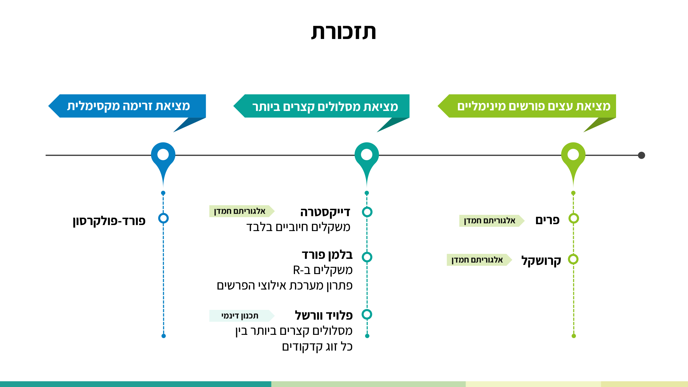
מקור: lec-flow-networks.pdf (עמ' 1–2)
1. רשת זרימה וזרימה חוקית — שלוש התכונות
רשת זרימה (flow network) היא גרף מכוון G = (V, E) שבו לכל קשת (u,v)∈E יש קיבולת אי-שלילית c: E → ℝ⁺. אם (u,v) ∉ E מניחים c(u,v) = 0. יש שני קדקודים מיוחדים: מקור s ובור t. לנוחות מניחים שכל קדקוד נמצא על מסלול מ-s (הגרף קשיר).
זרימה (flow) ב-G היא פונקציה f: V×V → ℝ המקיימת שלוש תכונות. שימו לב: הזרימה מוגדרת על כל זוג קדקודים, לא רק על קשתות קיימות.
- אילוצי קיבולת (capacity constraints): לכל u,v∈V מתקיים f(u,v) ≤ c(u,v) — אי אפשר לדחוף בקשת יותר מקיבולתה.
- סימטריה נגדית (skew symmetry): לכל u,v∈V מתקיים f(u,v) = −f(v,u) — זרימה חיובית בכיוון אחד = זרימה שלילית בכיוון ההפוך.
- חוק שימור הזרימה (flow preserving): לכל קדקוד פנימי u∈V−{s,t} מתקיים Σ_{v∈V} f(u,v) = 0 — מה שנכנס לקדקוד יוצא ממנו (חוץ מהמקור והבור).
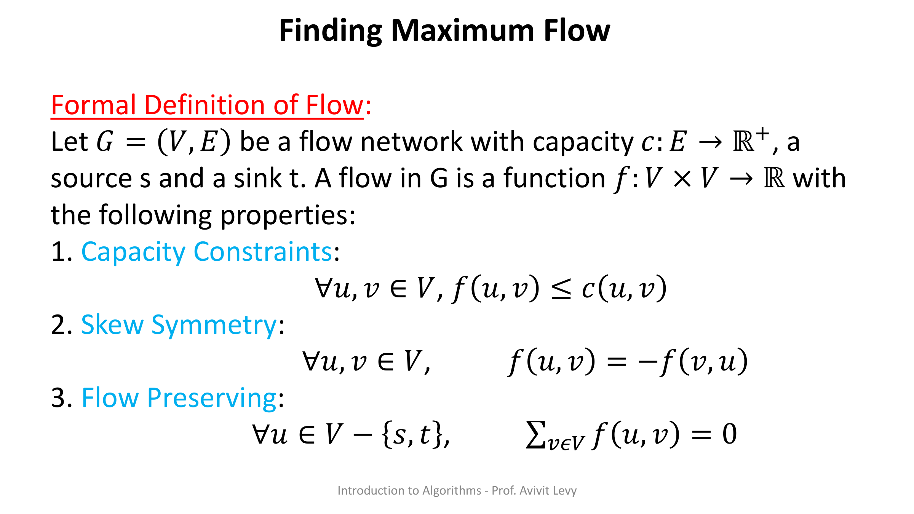
הזרימה f(u,v) מכונה net flow ויכולה להיות חיובית או שלילית. ערך הזרימה |f| מוגדר כזרימה הכוללת היוצאת מהמקור:
|f| = Σv∈V f(s,v)
בעיית הזרימה המקסימלית היא: בהינתן רשת זרימה עם קיבולת, מקור s ובור t — למצוא זרימה חוקית בעלת |f| מקסימלי.
1.1 הרשת הקנונית של השיעור (CLRS)
לאורך כל היחידה נעבוד עם אותה דוגמה קלאסית: רשת עם קדקודים s, v1, v2, v3, v4, t וקיבולים 16, 13, 12, 10, 4, 9, 14, 7, 20, 4. תיוג כל קשת הוא תמיד flow/capacity (למשל 4/12 = זרימה 4 מתוך קיבולת 12). השקף הבא מציג מצב ביניים שבו |f| = 19, ושואל את השאלה המנחה: "האם 19 היא באמת הזרימה המקסימלית?" (רמז: לא — נגיע ל-23).
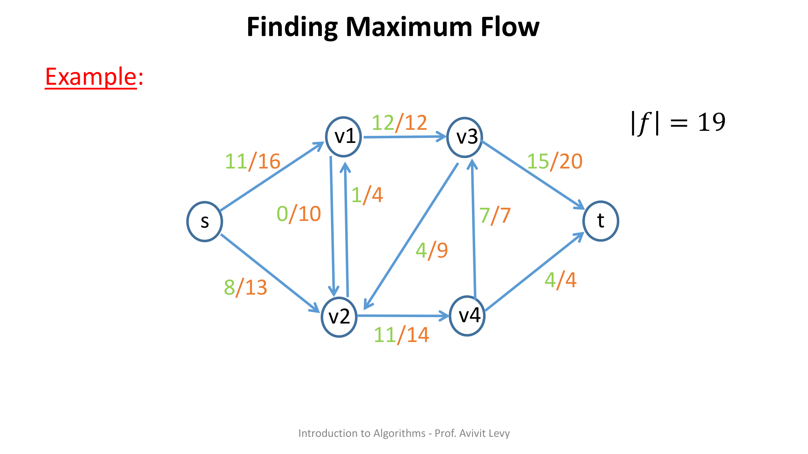
כדי לוודא שזו זרימה חוקית, בודקים את חוק שימור הזרימה בכל קדקוד פנימי. לדוגמה עבור v2: הזרימות סביבו הן f(v2,v4)=11, f(v2,v1)=1, f(v2,s)=−8, f(v2,v3)=−4, וסכומן 11+1−8−4 = 0 ✓. וגם |f| = f(s,v1)+f(s,v2) = 11+8 = 19.
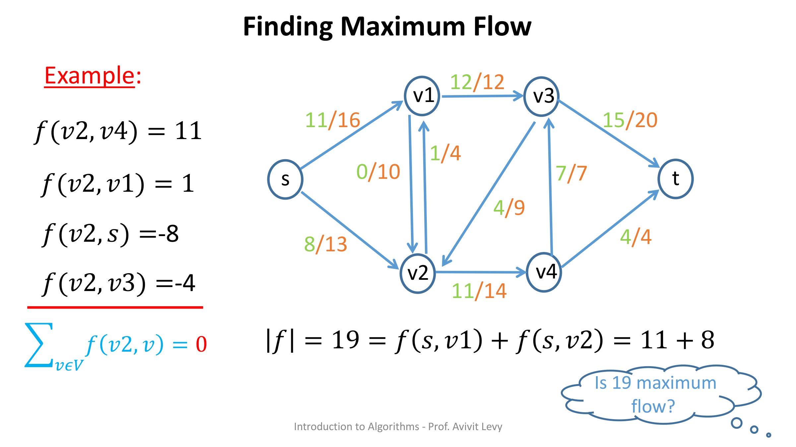
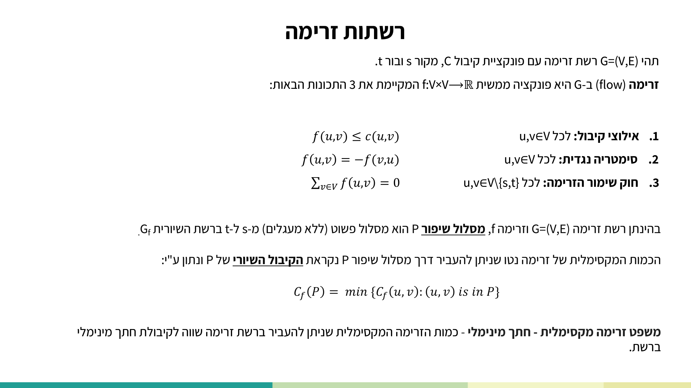
מקור: max-flow.pdf (עמ' 1–5), lec-flow-networks.pdf (עמ' 3)
2. הרשת השיורית (Residual Network)
זהו הרעיון הכי חשוב בכל היחידה. בהינתן זרימה f, הקיבולת השיורית של זוג קדקודים היא כמה זרימה נוספת אפשר עוד לדחוף בקשת:
cf(u,v) = c(u,v) − f(u,v)
שימו לב לעוצמה של הנוסחה יחד עם הסימטריה הנגדית. שתי דוגמאות מהשיעור:
- אם c(u,v)=16 ו-f(u,v)=11, אז c_f(u,v) = 16 − 11 = 5 — נשארו 5 יחידות פנויות בכיוון קדימה.
- אם c(u,v)=16 ו-f(u,v)=−4 (כלומר יש 4 יחידות זרימה בכיוון ההפוך v→u), אז c_f(u,v) = 16 − (−4) = 20 — אפשר לדחוף עד 20 בכיוון u→v: 16 לפי הקיבולת ועוד 4 מ"ביטול" הזרימה ההפוכה.
הרשת השיורית G_f = (V, E_f) מכילה בדיוק את הקשתות שקיבולתן השיורית חיובית:
Ef = { (u,v) ∈ V×V | cf(u,v) > 0 }
מקור: max-flow.pdf (עמ' 6–7)
3. מסלול משפר (Augmenting Path)
מסלול משפר p הוא מסלול פשוט (ללא מעגלים) מ-s ל-t ברשת השיורית G_f. אם קיים מסלול כזה — סימן שאפשר עוד להגדיל את הזרימה. הכמות המקסימלית שאפשר לדחוף לאורכו נקראת הקיבולת השיורית של המסלול, והיא צוואר-הבקבוק — הקשת החלשה ביותר במסלול:
cf(p) = min { cf(u,v) : (u,v) ∈ p }
כשדוחפים c_f(p) יחידות לאורך המסלול, לפחות קשת אחת נעשית רווּיה (זו שהגדירה את המינימום), ולכן היא נעלמת מהרשת השיורית. כך בכל איטרציה "סוגרים" עוד קשת.
מקור: max-flow.pdf (עמ' 7)
4. אלגוריתם Ford-Fulkerson — הפסאודו-קוד
עכשיו יש לנו את כל הרכיבים. השיטה פשוטה: אתחל זרימה אפס, וכל עוד יש מסלול משפר ברשת השיורית — דחוף לאורכו את צוואר-הבקבוק. הנה הפסאודו-קוד כפי שמופיע בשקף בדיוק (כולל שגיאות הכתיב במקור "(uv,)" ו-"pth"):
Ford-Fulkerson(G,s,t)
1. for each edge (uv,)∈E[G]
2. do f[u,v] ← 0
3. f[v,u] ← 0
4. while there exist a pth p from s to t in residual network G_f
5. do c_f(p) ← min {c_f(u,v): (u,v) is in p}
6. for each edge (u,v) in p
7. do f[u,v] ← f[u,v]+c_f(p)
8. f[v,u] ← -f[u,v]
הסבר שורה-שורה:
- שורות 1–3 (אתחול): לכל קשת מאפסים את הזרימה בשני הכיוונים — f[u,v]=0 וגם f[v,u]=0. מתחילים מזרימה חוקית טריוויאלית (|f|=0).
- שורה 4 (התנאי): כל עוד קיים מסלול p מ-s ל-t ברשת השיורית G_f — המשך. (איך מוצאים מסלול? BFS או DFS. הבחירה קובעת את הביצועים — ראו Edmonds-Karp.)
- שורה 5 (צוואר הבקבוק): מחשבים את הקיבולת השיורית של המסלול — המינימום של c_f על קשתותיו.
- שורות 6–8 (הדחיפה): לכל קשת במסלול מגדילים את הזרימה ב-c_f(p), ומיד מעדכנים את הקשת הנגדית ל-f[v,u] = −f[u,v] כדי לשמור על הסימטריה הנגדית (וכך נוצרת/מתעדכנת הקשת האחורית ברשת השיורית).
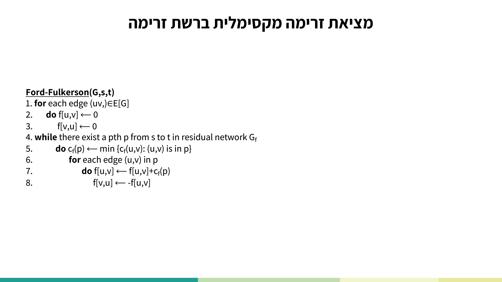
מקור: lec-flow-networks.pdf (עמ' 4)
5. ה-Trace המלא — ארבע איטרציות אל הזרימה 23
זו הדוגמה שהמרצה מריצה על 18 שקפים. נעקוב אחר ארבע האיטרציות; ערך הזרימה המצטבר עולה 0 → 4 → 11 → 19 → 23. שתי האיטרציות האחרונות מדגימות את מנגנון ה-"התחרטות" — ביטול זרימה דרך קשתות אחוריות. שחקו עם המעבדה האינטראקטיבית כדי לבחור מסלולים בעצמכם ולראות את הרשת השיורית מתעדכנת זה-לצד-זה.
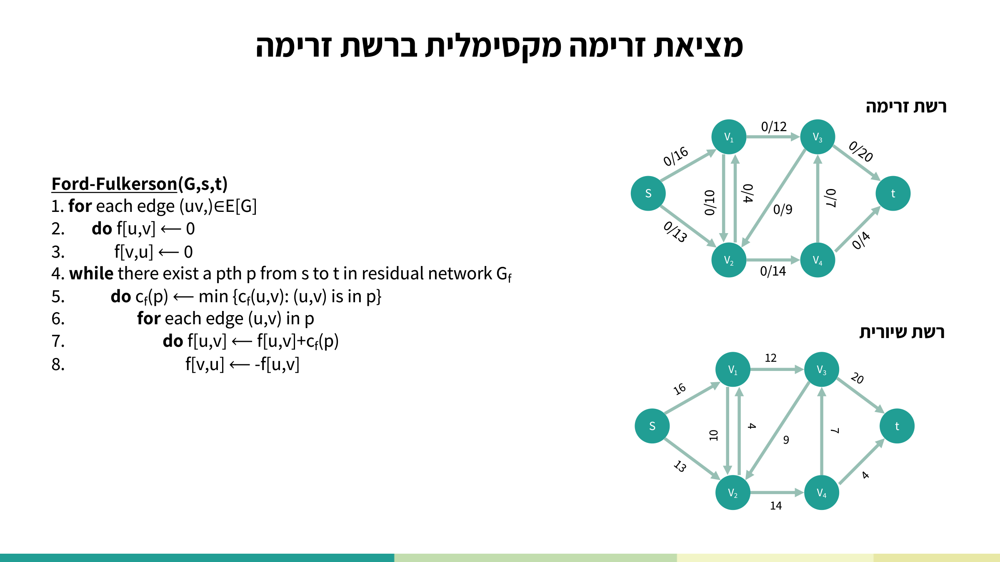
איטרציה 1 — מסלול "ישיר", צוואר בקבוק 4
בוחרים S → V1 → V3 → V2 → V4 → t. צוואר הבקבוק הוא הקשת V4→t בקיבול 4, ולכן c_f(p)=4. אחרי הדחיפה: S→V1=4/16, V1→V3=4/12, V3→V2=4/9, V2→V4=4/14, V4→t=4/4 (רווּיה). |f| = 4.
איטרציה 2 — צוואר בקבוק 7
בוחרים S → V1 → V2 → V4 → V3 → t. צוואר הבקבוק הוא V4→V3 בקיבול 7. אחרי הדחיפה: S→V1=11/16, V1→V2=7/10, V2→V4=11/14, V4→V3=7/7 (רווּיה), V3→t=7/20. |f| = 11.
איטרציה 3 — "התחרטות — הורדנו 7", צוואר בקבוק 8
וכאן קורה הקסם. בוחרים S → V2 → V1 → V3 → t. הקשת V2→V1 ברשת השיורית מציגה קיבול 11, המורכב מ-7 (ביטול הזרימה הקיימת על V1→V2) ועוד 4 (הקשת האמיתית V2→V1 בקיבול 4). הדחיפה של 8 מבטלת את כל 7 היחידות על V1→V2 (7/10 → 0/10) ומעבירה יחידה אחת על V2→V1. אחרי הדחיפה: S→V2=8/13, V1→V3=12/12 (רווּיה), V3→t=15/20. |f| = 19 — זה בדיוק המצב שראינו בשקף ההגדרות!
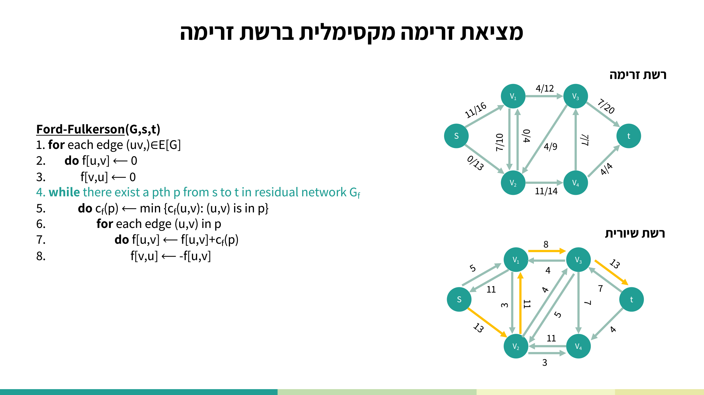
איטרציה 4 — "התחרטות — הורדנו 4", צוואר בקבוק 4
בוחרים S → V2 → V3 → t. הקשת V2→V3 ברשת השיורית נובעת מביטול הזרימה הקיימת על V3→V2 (4 יחידות). הדחיפה של 4: S→V2 (8/13 → 12/13), ביטול הזרימה על V3→V2 (4/9 → 0/9), V3→t (15/20 → 19/20). |f| = 23.
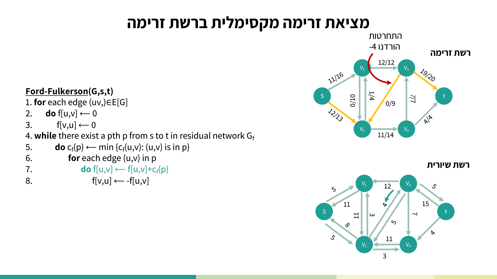
מצב סופי — אין יותר מסלול משפר
ברשת השיורית כבר אין מסלול מ-s ל-t. הזרימה המקסימלית: S→V1=11, S→V2=12, ולכן |F| = 11 + 12 = 23. אותו ערך מתקבל מהזרימה הנכנסת ל-t: V3→t=19 ועוד V4→t=4 שווה 23.
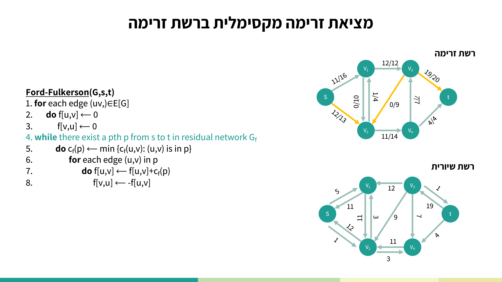
מקור: lec-flow-networks.pdf (עמ' 5–22)
6. Edmonds-Karp וסיבוכיות — למה הבחירה של המסלול קובעת
Ford-Fulkerson לא מציין איך לבחור את המסלול המשפר (שורה 4). הבחירה משפיעה דרמטית על זמן הריצה. הניתוח:
- אם הקיבולים ממשיים/רציונליים — השיטה עלולה לא להתכנס כלל לזרימה המקסימלית.
- אם הקיבולים שלמים — ההתכנסות מובטחת (בכל איטרציה |f| גדל בלפחות 1), אך זמן הריצה עלול להיות O(|f*|) — תלוי בערך הזרימה המקסימלית, לא רק בגודל הגרף!
הדוגמה הקלאסית שממחישה את הכשל: גרף עם קדקודים s, v1, v2, t, קיבולי 1,000,000 על ארבע הקשתות החיצוניות, וקשת אמצעית v1→v2 בקיבול 1 בלבד. אם בכל פעם בוחרים מסלול שעובר דרך הקשת האמצעית (s→v1→v2→t), דוחפים יחידה אחת בלבד בכל איטרציה — ואז בקשת השיורית ההפוכה s→v2→v1→t עוד יחידה, וחוזר חלילה — בסך הכל ~2,000,000 איטרציות עבור גרף עם 4 קדקודים.
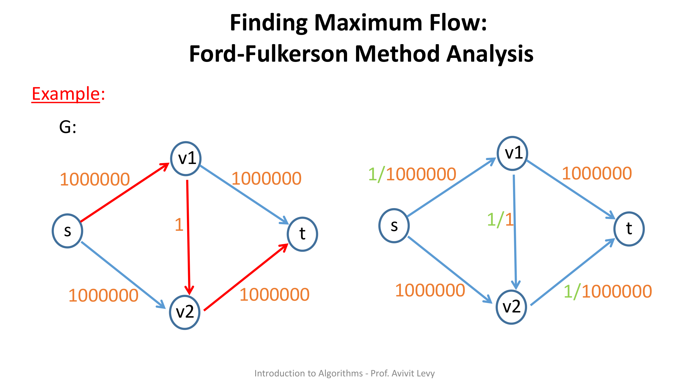
מקור: max-flow.pdf (עמ' 15–18)
7. חתכים ומשפט Max-Flow Min-Cut
חתך (cut) של רשת זרימה הוא חלוקת V לשתי קבוצות (S, T = V−S) כך ש-s∈S ו-t∈T. קיבול החתך c(S,T) הוא סכום קיבולי הקשתות מ-S ל-T. חתך מינימלי הוא חתך בעל הקיבול המינימלי מבין כל החתכים האפשריים.
המשפט המרכזי — Max-Flow Min-Cut: כמות הזרימה המקסימלית שניתן להעביר ברשת שווה לקיבול החתך המינימלי בה. בניסוח של Ford-Fulkerson, בהינתן זרימה f — שלושת התנאים הבאים שקולים:
- f היא זרימה מקסימלית ב-G.
- הרשת השיורית G_f אינה מכילה מסלולים משפרים.
- קיים חתך (S,T) שעבורו |f| = c(S,T).
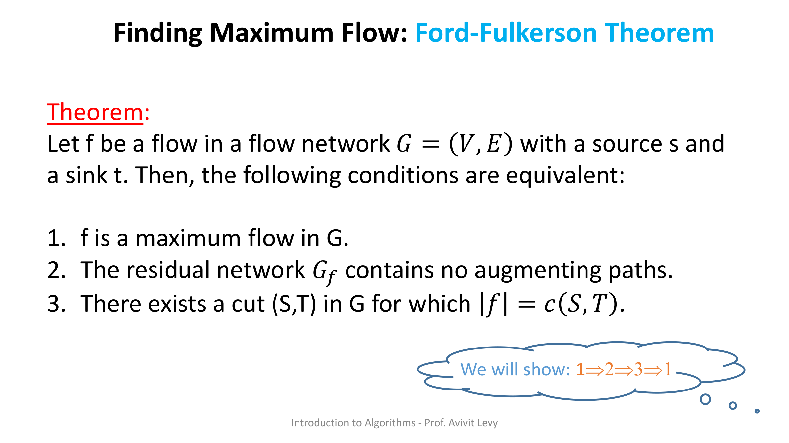
מוכיחים במעגל שקילויות 1 ⇒ 2 ⇒ 3 ⇒ 1:
(1 ⇒ 2): בשלילה — נניח ש-f מקסימלית אבל G_f מכיל מסלול משפר p. אז אפשר להגדיר זרימה f_p על המסלול (+c_f(p) קדימה, −c_f(p) אחורה, 0 אחרת), ו-f + f_p היא זרימה חוקית עם ערך גדול יותר — סתירה למקסימליות. לכן אם f מקסימלית, אין מסלול משפר.
(2 ⇒ 3): נניח שאין מסלול משפר. נגדיר S = { v | קיים מסלול מ-s ל-v ב-G_f } ו-T = V−S. אז (S,T) חתך: s∈S טריוויאלית, ו-t∈T כי אין מסלול מ-s ל-t. לכל u∈S, v∈T מתקיים f(u,v)=c(u,v) (אחרת c_f(u,v)>0, אז (u,v)∈E_f, ו-v היה נגיש — סתירה). מכיוון שכל הקשתות החוצות רווּיות, נובע |f| = c(S,T).
(3 ⇒ 1): לכל זרימה וכל חתך מתקיים |f| ≤ c(S,T) (בגלל אילוצי הקיבולת). לכן אם קיים חתך שעבורו |f| = c(S,T), אף זרימה לא יכולה לעבור אותו — כלומר f מקסימלית. (מ.ש.ל.)
מקור: max-flow.pdf (עמ' 8–14)
8. שידוך בגרף דו-צדדי — הרחבה, לא נדרש למבחן
מקור: הודעת המרצה (26.6.2026) · lec-flow-networks.pdf (עמ' 23–42) — יישום החלוקה בין ליבות
9. תרגילי הקורס (מההרצאה)
תרגיל 1 — חלוקת משימות בין שתי ליבות CPU
נתון (מילה במילה מהמקור):
נתון CPU בעל 2 ליבות ו-n משימות לביצוע. עלות הרצת משימה i על ליבה A היא a_i ועל ליבה B היא b_i. עלות פתרון (השמה של משימות לליבות) הוא סכום עלויות ההרצה.
א. הציגו רשת זרימה בה קדקוד S מייצג את ליבה A, קדקוד t מייצג את ליבה B ומוגדר קדקוד לכל משימה. הוסיפו קשתות והגדירו קיבולים, כך שכל חתך בקיבול k יתאים לפתרון שעלותו k ולהיפך.
ב. כל זוג משימות צריכות לתקשר זו עם זו. עלות התקשורת בין שתי משימות הרצות על אותה ליבה היא 0. אם i ו-j רצות על ליבות נפרדות, עלות התקשורת ביניהן היא δ(i,j) הנתונה כקלט. הציעו אלגוריתם למציאת הדרך האופטימלית לחלק את המשימות בין שתי הליבות, כך שסך העלויות יהיה מינימלי. נתחו סיבוכיות והוכיחו נכונות.
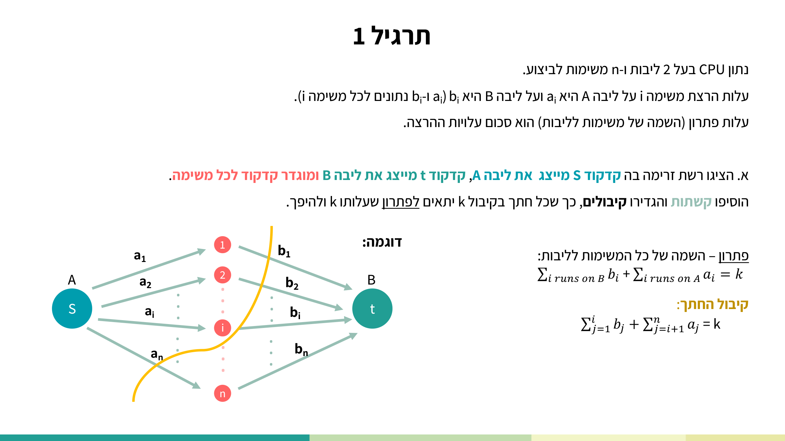
פתרון סעיף א (מילה במילה מהמקור):
נגדיר:
רשת זרימה N = (G,s,t,c)
s – קדקוד שמייצג את ליבה A
t – קדקוד שמייצג את ליבה B
קבוצת הצמתים V = {1,2,3,…,n} – מייצגים את המשימות
קשתות – מ-s לכל i∈V, קשתות מכל i∈V ל-t
קיבולים – לכל i∈V: c(s,i) = a_i , c(i,t) = b_i
עבור חתך שמפריד את המשימות 1..i בצד אחד ו-i+1..n בשני:
Σ_{j=1}^{i} b_j + Σ_{j=i+1}^{n} a_j = k
מסקנה (מילה במילה מהמקור): כל חתך (S,T) שבו s∈S ו-t∈T מייצג השמה חוקית של משימות לליבות. כל משימה נלקחת בחשבון פעם אחת בדיוק. i∈S מורצת על ליבה B, i∈T מורצת על ליבה A.
פתרון סעיף ב (מילה במילה מהמקור) — הבנייה: מוסיפים לרשת מסעיף א קשת בין כל זוג משימות i,j עם קיבול δ(i,j). קיבול החתך הופך ל:
Σ_{i∈T} a_i + Σ_{i∈S} b_i + Σ_{i∈S, j∈T} δ(i,j) = k
ההגדרה הפורמלית והאלגוריתם (מילה במילה מהמקור):
קיבולים – לכל i∈V: c(s,i) = a_i
c(i,t) = b_i
לכל i≠j: c(i,j) = δ(i,j)
1. בניית הרשת כמוגדר
2. הרצת פורד-פולקרסון למציאת זרימה מקסימלית
3. מציאת חתך מינימלי
סיבוכיות (מילה במילה מהמקור): בהנחת קיבולים שלמים — Ford-Fulkerson: O(|E|·f*) = O(n²·f*) (יש |E|=O(n²) כי יש קשת בין כל זוג משימות).
נכונות (מילה במילה מהמקור): שיטת Ford-Fulkerson מוצאת זרימה מקסימלית, שלפי משפט זרימה מקסימלית–חתך מינימלי שווה לקיבול החתך המינימלי. לכן החתך המינימלי שהאלגוריתם מחזיר נותן את העלות המינימלית, ולפי קשתות החתך נחלק את המשימות לליבות.
הסבר מודרך: ה"טריק" הוא שהחתך הוא ההשמה: משימה בצד אחד "רצה על A", בצד השני "רצה על B". קשת s→i בקיבול a_i נחתכת רק כשמשימה i בצד של t (רצה על A → משלמים a_i); קשת i→t בקיבול b_i נחתכת רק כשהמשימה בצד של s (רצה על B). בסעיף ב, קשת התקשורת δ(i,j) נחתכת רק כששתי המשימות בצדדים מנוגדים — בדיוק כשמשלמים על תקשורת בין-ליבתית. לכן מזעור קיבול החתך = מזעור העלות הכוללת.
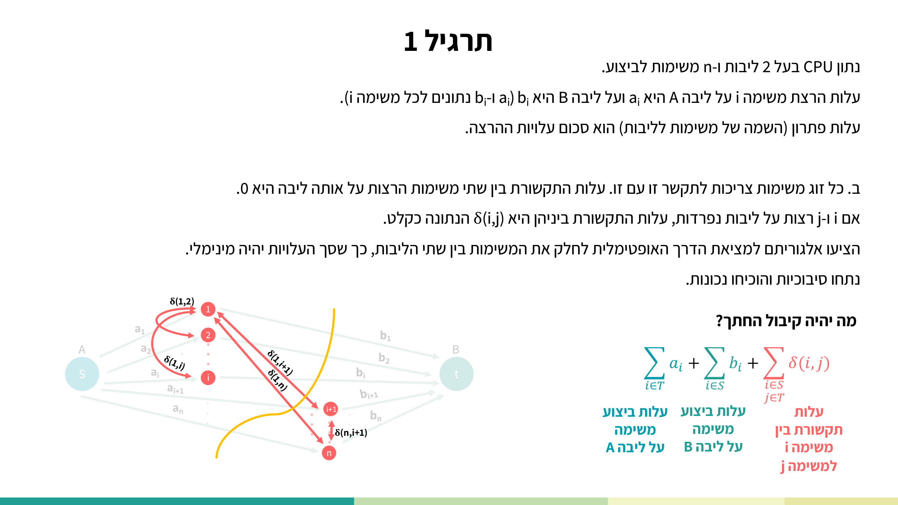
תרגיל 2 — האם סכום שתי זרימות הוא זרימה?
שאלה (מילה במילה מהמקור):
בהינתן רשת זרימה G=(V,E) יהיו f1,f2 פונקציות f1,f2: V×V→ℝ, וגם סכום הזרימות f1+f2 מוגדר ע"י: לכל u,v∈V מתקיים (f1+f2)(u,v) = f1(u,v)+f2(u,v). אם f1,f2 הן זרימות ב-G, אילו משלוש תכונות הזרימה חייבת f1+f2 לקיים ואילו היא מפרה?
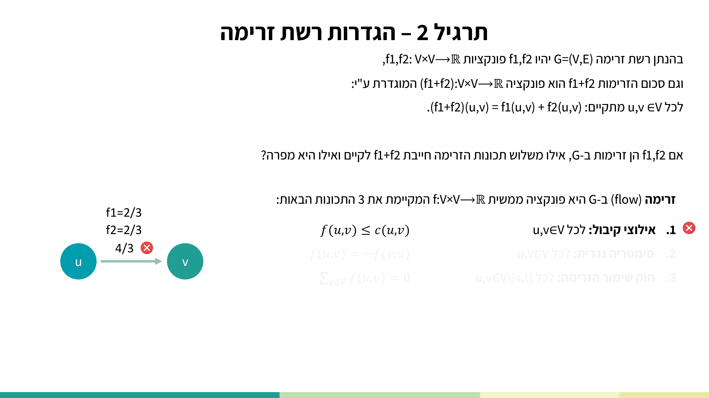
תכונה 1 — אילוצי קיבול: מופרת ❌. דוגמת נגד על קשת u→v בקיבול c=3: f1=2/3 ו-f2=2/3 (שתיהן חוקיות), אך (f1+f2)=4/3 — זרימה 4 החורגת מקיבול 3.
תכונה 2 — סימטריה נגדית: מתקיימת ✓. הוכחה (מילה במילה מהמקור):
(f1+f2)(u,v) = f1(u,v) + f2(u,v) = −f1(v,u) + (−f2(v,u)) = −(f1+f2)(v,u)
תכונה 3 — שימור זרימה: מתקיימת ✓. הוכחה (מילה במילה מהמקור):
Σ_{v∈V}(f1+f2)(u,v) = Σ_{v∈V}[f1(u,v)+f2(u,v)]
= Σ_{v∈V} f1(u,v) + Σ_{v∈V} f2(u,v) = 0 + 0 = 0
הסבר מודרך: תכונות 2 ו-3 הן לינאריות — שוויונים שנשמרים תחת חיבור. אבל תכונה 1 היא אי-שוויון: סכום שני מספרים שכל אחד ≤ הקיבול אינו בהכרח ≤ הקיבול. לכן רק אילוצי הקיבול עלולים להישבר.
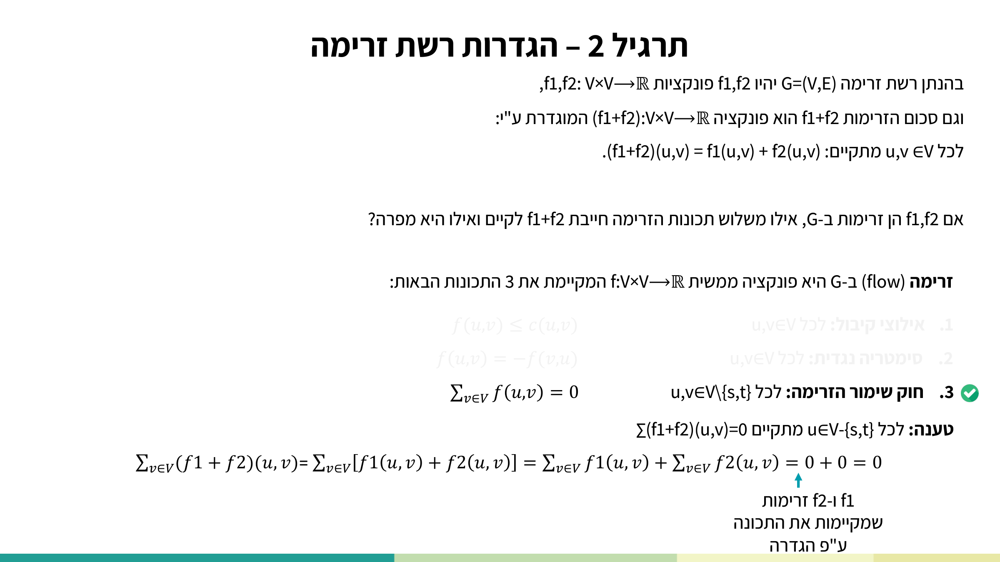
מקור: lec-flow-networks.pdf (עמ' 23–53)
10. תרגיל הבית — רשתות זרימה
⬇ הורדת דף התרגיל (hw-flow-networks.pdf) · ⬇ הורדת הפתרון הרשמי (sol-hw-flow-networks.pdf)
שלוש השאלות (מילה במילה מהמקור):
1. (ממבחן) תהי (G,s,t,c) רשת זרימה. הציעו אלגוריתם אשר מוצא קשת אשר אם מעלים את הקיבול שלה ערך זרימת המקסימום עולה גם-כן, או מודיע כי אין קשת שכזו. הוכיחו נכונות ונתחו סיבוכיות.
2. הראו שתמיד ניתן למצוא זרימה מקסימלית ברשת G=(V,E) באמצעות סדרה של |E| מסלולי שיפור לכל היותר.
3. הציעו אלגוריתם, אשר בהינתן רשת זרימה N=(G,s,t,c) עם קיבולים שלמים, מחזיר את חתך המינימום אשר מכיל מספר מינימלי של קשתות מבין כל חתכי המינימום ברשת. (רמז: הגדירו פונקציית קיבול חדשה.)

פתרון שאלה 1


אינטואיציה (מילה במילה, שלושה מקרים):
- אם קיים חתך מינימלי יחיד — העלאת קיבול קשת כלשהי בחתך תגדיל את הזרימה המקסימלית (לפי max-flow=min-cut).
- אם קיימים לפחות שני חתכים מינימליים אך לכולם קשת משותפת — העלאת קיבולה תגדיל את הזרימה.
- אם קיימים לפחות שני חתכים מינימליים זרים — אי אפשר למצוא קשת יחידה שתגדיל את הזרימה.
פסאודו-קוד (מילה במילה מהמקור):
find_minimum_cut (G_f, s) 1. BFS(G_f, s) 2. S ← ∅ 3. T ← ∅ 2. for v ∈ G_f 3. do if d[v] ≠ ∞ 4. S ← S ∪ v 5. else T ← T ∪ v 6. return (S,T)
find_improvement_edge(G, s, t, c): 1. G_f ← Edmons-Karp(G, s ,t, c) //O(|E|²|V|) 2. max_flow ← f(s,t) //O(1) 3. minimum_cut ← find_minimum_cut (G, s) //O(|E| + |V|) 4. for e ∈ minimum_cut //O(|E|) 5. do c_f[e] ← c_f[e] + 1 //O(1) 6. G'_f ← Edmons-Karp(G, s ,t, c) //O(|E|²|V|) 7. if f(s,t) > max_flow //O(1) 8. return e //O(1) 9. return NIL //O(1)
סיבוכיות (מילה במילה מהמקור): O(|E|³·|V|) — עבור כל קשת בחתך (עד |E|) מריצים Edmonds-Karp בעלות O(|E|²|V|).
נכונות (מילה במילה מהמקור): נרצה להראות כי האלגוריתם אכן מוצא קשת אשר אם מעלים את הקיבול שלה, ערך זרימת המקסימום עולה, או מודיע כי לא קיימת. בשורות 1–3 האלגוריתם ירייץ את האלגוריתם של אדמונס-קרפ, שנכונותו הוכחה בהרצאה, וימצא את החתך המינימלי בגרף. לפי משפט זרימה מקסימלית – חתך מינימלי, הזרימה המקסימלית שווה לקיבול החתך המינימלי בגרף, ולכן הגדלת קיבול החתך המינימלי תגדיל את ערך הזרימה המקסימלית. ייתכנו 3 מקרים:
- מקרה 1 (חתך מינימלי יחיד): הגדלת קיבול כל קשת תגדיל את קיבול החתך המינימלי ובכך את הזרימה, ולכן כבר באיטרציה הראשונה של הלולאה שבשורות 4–6 ערך הזרימה G' שיחזור מהאלגוריתם יהיה גדול מערך הזרימה הקודם G, והאלגוריתם יחזיר את הקשת בשורה 8.
- מקרה 2 (שני חתכים מינימליים לפחות עם קשת משותפת אחת לפחות): במהלך אחת האיטרציות בלולאה שבשורות 4–6, לאחר שהאלגוריתם יעלה את קיבול הקשת המשותפת, מאלגוריתם אדמונס-קרפ תחזור זרימה G' שערכה גדול מערך הזרימה הקודם G, והאלגוריתם יחזיר קשת זו בשורה 8.
- מקרה 3 (שני חתכים מינימליים זרים לפחות): עבור כל קשת בחתך שיימצא, כשהאלגוריתם ירייץ את אדמונס-קרפ עבור הקיבול החדש, ערך הזרימה G' לא יהיה גדול יותר מערך G, לכן האלגוריתם לא ייכנס לתנאי שבשורה 7 ויחזיר שלא קיימת קשת כזו, בשורה 9.
הסבר מודרך: מוצאים את החתך המינימלי (קדקודים נגישים מ-s ברשת השיורית לאחר Edmonds-Karp). ואז בודקים כל קשת בחתך בנפרד: מעלים את קיבולה ב-1, מריצים שוב, ואם הזרימה גדלה — זו הקשת. אם אף קשת לא עזרה (מקרה 3, חתכים זרים) — מחזירים NIL. שימו לב לשגיאות הכתיב במקור: "Edmons-Karp" (חסר d) והמספור המשובש ב-find_minimum_cut — שוכפלו כפי שהם.
פתרון שאלה 2

טענה: קיימת סדרה של |E| מסלולי שיפור לכל היותר.
הוכחה (מילה במילה מהמקור):
- נתון 1: כאשר קשת הופכת רווּיה, היא לא מופיעה ברשת השיורית. מכל מסלול שיפור קיימת לפחות קשת אחת רווּיה, אחרת ניתן להגדיל את הזרימה — בסתירה למקסימליות.
- נתון 2: אם בוחרים את סדרת מסלולי השיפור כך שמעבירים זרימה רק בקשתות מקוריות של הגרף (ולא בקשתות שיוריות שמשמעותן התחרטות), אזי לאחר |E| מסלולים לא נשארות קשתות מקוריות שאינן רווּיות, ואין מסלול שיפור.
- משני הנתונים מקבלים חסם של |E| על מספר המסלולים. (מ.ש.ל.)
הסבר מודרך: כל מסלול שיפור "שורף" לפחות קשת אחת (הופך אותה לרווּיה), ובגרף יש רק |E| קשתות — לכן לכל היותר |E| מסלולים. זו בדיוק האינטואיציה שבסיס החסם O(|V||E|) של Edmonds-Karp.
פתרון שאלה 3

אינטואיציה (מילה במילה מהמקור): אם נגדיל מעט את הקיבול של כל קשת, החתך המינימלי בגרף החדש יהיה זה עם מספר הקשתות המינימלי מבין כל חתכי המינימום. מניחים שכל הקיבולים שלמים.
פסאודו-קוד (מילה במילה מהמקור):
find_minimum_cut_with_minimum_edges(G, s, t, c) 1. c'(u,v) ← c(u,v) + 1/|E| : for (u,v) in G // O(|E|) 2. G_f ← Ford-Fulkerson(G, s ,t, c') // O(|E|f*) 3. return find_minimum_cut(G_f, s) // O(|E| + |V|)
נכונות (מילה במילה מהמקור): לכל חתך A_i עם t_i קשתות מתקיים t_i < |E|, ולכן t_i/|E| < 1 ו-c(A_i) < c'(A_i) < c(A_i)+1 — השינוי הגדיל כל חתך בפחות מ-1. מסקנה: לכל שני חתכים, אם c(A)<c(B) אז c'(A)<c'(B) (כי הקיבולים שלמים: c'(A) = c(A)+t_i/|E| < c(A)+1 ≤ c(B)).
הסבר מודרך: התוספת t_i/|E| הופכת את מספר הקשתות ל"שובר שוויון" עדין: היא לא משנה את הסדר בין חתכים בעלי קיבול שונה (כי היא <1 והקיבולים שלמים), אבל בין חתכים מינימליים בעלי אותו קיבול — זה שיש לו פחות קשתות יקבל תוספת קטנה יותר, ולכן יזכה בתואר "המינימלי" בגרף המשוקלל החדש.
מקור: hw-flow-networks.pdf (עמ' 1), sol-hw-flow-networks.pdf (עמ' 1–4)
11. הרחבה — חתך מינימלי גלובלי (Karger)
🎓 הרחבה — לא נדרש למבחן: אלגוריתם Karger למציאת min-cut גלובלי
נספח שקפי הקורס (min-cut.pdf) עוסק בבעיה נפרדת: חתך מינימלי גלובלי של מולטי-גרף לא-מכוון (מספר הקשתות המינימלי שהסרתן מנתקת את הגרף) — זה לא החתך s-t של רשת זרימה. הנושא נלמד לעומק ביחידת האלגוריתמים האקראיים (מודול 13). כאן רק ראשי פרקים, לצורך שלמות.
אלגוריתם Karger הוא הסתברותי (Monte Carlo), מבוסס כיווץ קשתות:
Karger's Algorithm:
Input: multi-graph G
Output: min-cut in G
1. While the number of vertices in the graph > 2, do:
a. Choose an edge (u,v) of the graph uniformly at random
b. Unite the vertices u,v
2. Return the remaining edges as the min-cut.
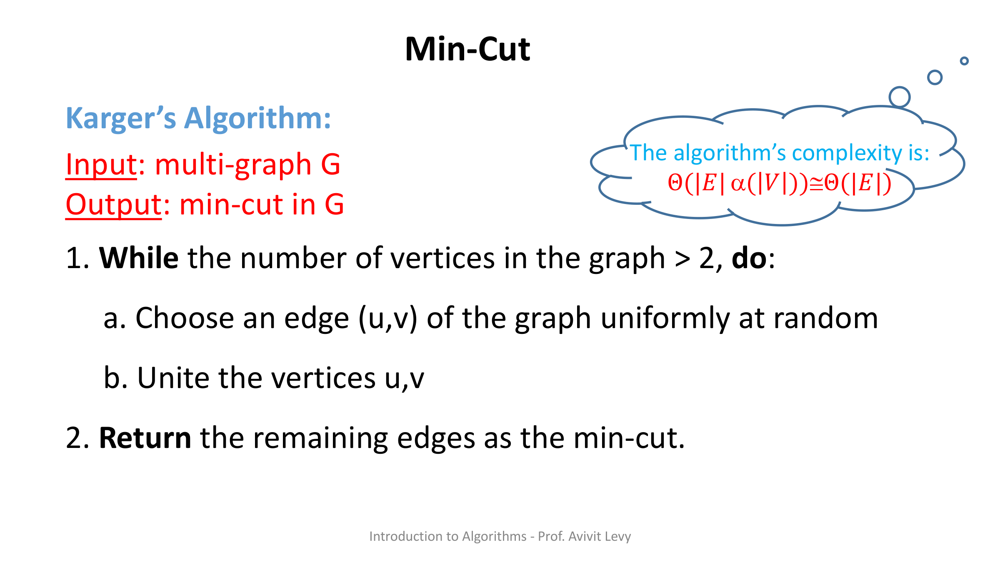
אותו גרף בן 5 קדקודים, שתי ריצות אקראיות שונות — תוצאות שונות (|C|=4 מול |C|=3). זה בדיוק ממחיש שהאלגוריתם עלול לטעות, ולכן צריך הגברת הסתברות.
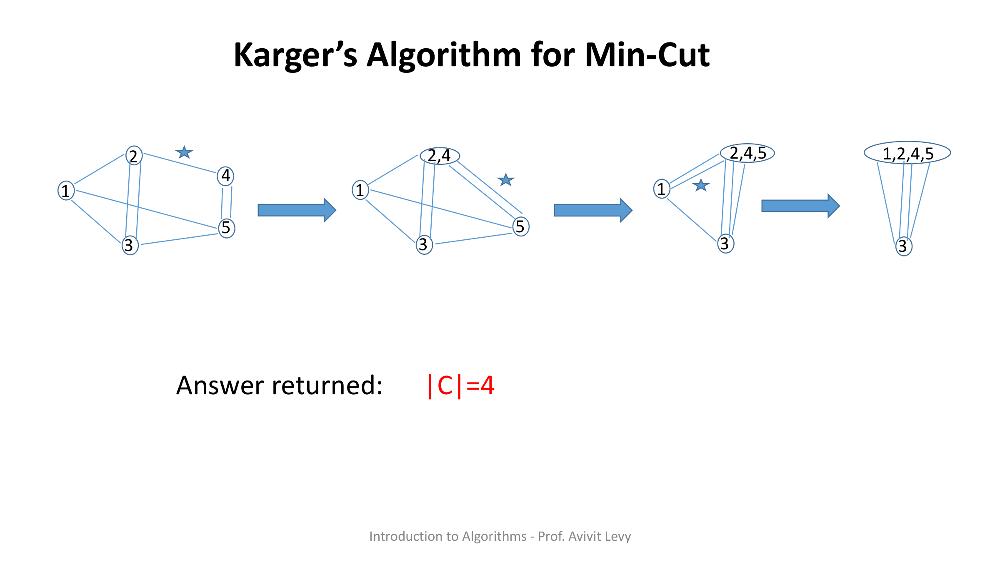
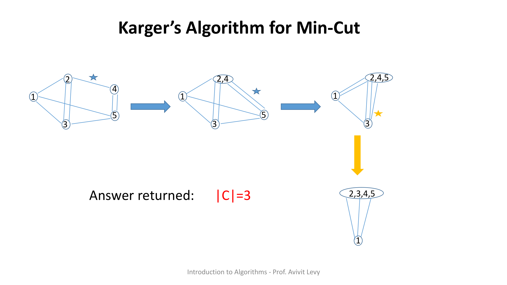
חסם ההצלחה של ריצה בודדת הוא ≥ 2/(n(n−1)) (חישוב טלסקופי), ועם X = c·n² הרצות הסתברות הטעות יורדת ל-e^(−c).
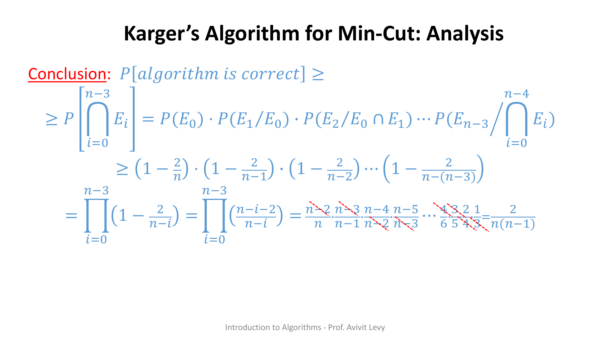
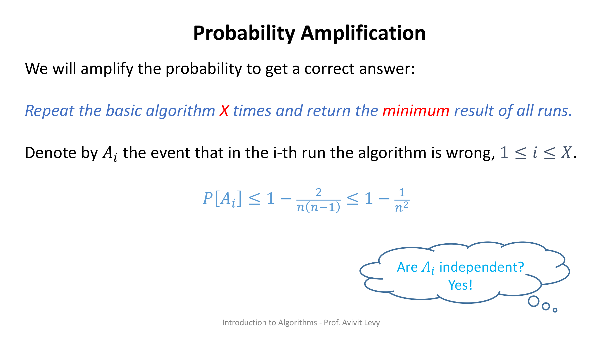
מקור: min-cut.pdf (עמ' 1–25) — נלמד במלואו במודול 13
12. בדיקה עצמית
ברשת הקנונית, מסלול השיפור הראשון הוא S → V1 → V3 → V2 → V4 → t. מהי הקיבולת השיורית של המסלול c_f(p)?
נתון c(u,v)=16 ו-f(u,v)=−4 (יש 4 יחידות זרימה בכיוון ההפוך). מהי הקיבולת השיורית c_f(u,v)?
מה מאפשרת קשת אחורה (residual back edge) ברשת השיורית, כפי שהודגם ב"התחרטות — הורדנו 7"?
מהי הסיבוכיות של Edmonds-Karp (Ford-Fulkerson עם בחירת מסלול קצר ביותר ב-BFS)?
לפי שאלה 2 בתרגיל הבית, בכמה מסלולי שיפור לכל היותר אפשר תמיד למצוא זרימה מקסימלית?
אם f1,f2 זרימות חוקיות, איזו מבין שלוש תכונות הזרימה עלולה להישבר ב-f1+f2?
מקור: max-flow.pdf, lec-flow-networks.pdf, sol-hw-flow-networks.pdf